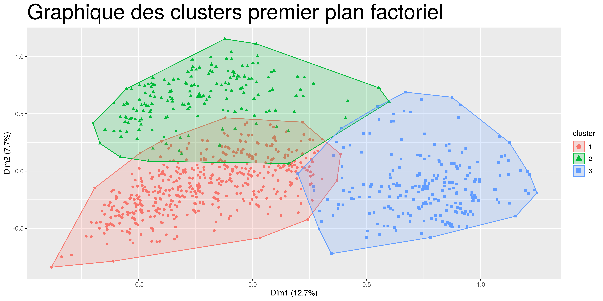
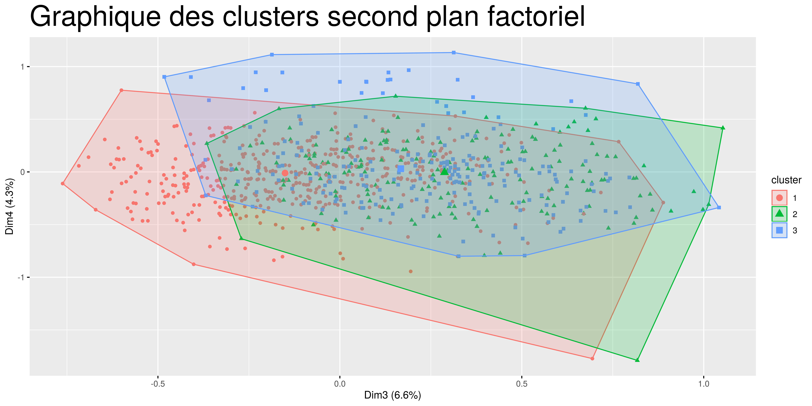
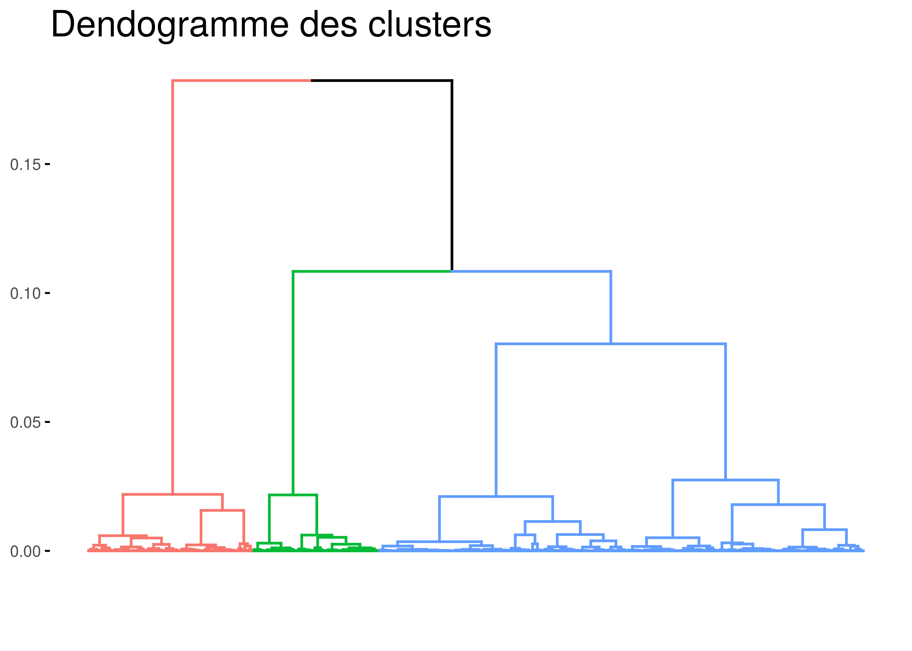

7 Classification ascendante hiérarchique (CAH)
La classification ascendante hiérarchique (CAH) est une technique statistique visant à partitionner une population en différents sous-groupes, appelé aussi classes ou clusters. La CAH cherche à ce que les individus au sein d’une même classe soient les plus proches possibles (homogénéité intra-classe) tandis que les classes soient les plus dissemblables possibles. 1

Le nombre des clusters est déterminé automatiquement lors de la classification, car c’est ce qui sépare le mieux les bibliothèques. Toutefois on observe qu’il y a quelques chevauchements.

A mesure que le pouvoir explicatif des axes décroit, la classification des individus se chevauche.

Affichons le nombre d’individus dans chaque cluster.
| Cluster | Individus |
|---|---|
| 1 | 791 |
| 2 | 231 |
| 3 | 315 |
7.1 Caractéristiques des clusters
7.2 Cluster 1
Le tableau des résultats décrivant les caractéristiques des clusters contient 5 colonnes et autant de lignes que les variables et modalités qui influencent ce cluster. Voici une description de ce que représente chaque colonne :
Cla/mod indique quelle part (pourcentage) de tous les individus présentant cette modalité se retrouve dans cette classe (ce cluster, cette catégorie). Autrement dit, c’est la fréquence du cluster dans la modalité.
Mod/cla indique quelle part (pourcentage) de tous les individus du cluster présentent cette modalité. C’est la fréquence de la modalité dans le cluster. [^3]
Global : indique le nombre total d’occurrence de la modalité.
p.value : indique la significativité de la modalité dans la construction de la classe.
v.test : indique la statistique du test. C’est un moyen alternatif pour lire la significativité de la modalité. Une v.test supérieure en valeur absolue à 1.96 indique la modalité est significative à un seuil d’erreur inférieur à 5%.
Or ce tableau peut être très long car il contient la liste de toutes les modalités qui contribuent à définir le cluster et comme nous avons vu dans le graphique des clusters, il y a des chevauchements donc il serait pertinent de ne relever que les modalités les plus exclusives à ce cluster. Nous déterminons ces modalités à partir de la colonne Cla/mod qui indique la part des individus qui possèdent la modalité étudiée se trouvant dans le cluster. La logique est que si un fort pourcentage des individus possèdent la modalité c’est que cette modalité leur est propre.
| Cla.Mod | Mod.Cla | Global | p.value | v.test | |
|---|---|---|---|---|---|
| audio_collection=audio_collection_no | 100 | 1.01 | 0.60 | 0.01 | 2.4 |
| legal_basis=SD | 100 | 0.88 | 0.52 | 0.03 | 2.2 |
| ST_region_code=st_4 | 93 | 28.07 | 17.80 | 0.00 | 12.9 |
| legal_basis=CI | 93 | 70.54 | 44.88 | 0.00 | 24.1 |
| ST_region_code=st_1 | 87 | 13.78 | 9.42 | 0.00 | 7.0 |
| ST_state_population=500K-4M | 83 | 54.49 | 39.04 | 0.00 | 14.3 |
| ST_region_code=st_8 | 82 | 7.59 | 5.46 | 0.00 | 4.3 |
| ST_region_code=st_6 | 81 | 4.30 | 3.14 | 0.00 | 3.0 |
| hours_open=<2340_h | 78 | 54.74 | 41.51 | 0.00 | 12.0 |
| internet_computer_use=internet_computer_use_low | 77 | 24.78 | 19.07 | 0.00 | 6.6 |
| local_cooperative_agreements=local_cooperative_agreements_no | 77 | 31.61 | 24.38 | 0.00 | 7.6 |
| print_collection=<25000 | 76 | 47.16 | 36.50 | 0.00 | 9.9 |
| administrative_structure=SO | 76 | 98.48 | 76.44 | 0.00 | 24.1 |
| hours_open=2340-3150h | 76 | 38.69 | 30.22 | 0.00 | 8.3 |
| branch_libraries=branch_libraries_no | 74 | 99.62 | 79.88 | 0.00 | 23.3 |
| internet_computer_use=internet_computer_use_medium | 73 | 23.39 | 19.00 | 0.00 | 5.0 |
| young_adult_programs=young_adult_programs_no | 73 | 26.17 | 21.32 | 0.00 | 5.3 |
| digital_collection=7500+ | 72 | 75.60 | 61.93 | 0.00 | 12.4 |
| ST_region_code=st_7 | 72 | 9.86 | 8.08 | 0.00 | 2.9 |
| ST_region_code=st_3 | 69 | 19.47 | 16.75 | 0.00 | 3.2 |
Le cluster 1 est constitué de bibliothèques ayant dans leur catalogue moins de 25000 œuvres imprimées. Ce sont des bibliothèques situées dans des petites comtés (moins de 65000 habitants) et qui ouvrent en moyenne 6 heures et demi par jour (week-end y compris). Ces bibliothèques n’ont pas dans leur catalogue des vidéos ou des fichiers audio. Elles ne sont pas spécifiques à une région en particulier car elles sont étendue dans 4 régions différentes.font partie des Etats de taille moyenne (500.000 à 4 million d’habitants. Elles ont une faible utilisation d’Internet et sont à grande partie des structures administratives à guichet unique (administrative_structure=SO).
7.3 Cluster 2
| Cla.Mod | Mod.Cla | Global | p.value | v.test | |
|---|---|---|---|---|---|
| legal_basis=NP | 86 | 83 | 16.7 | 0.00 | 26.6 |
| ST_state_population=10M+ | 86 | 90 | 18.2 | 0.00 | 28.3 |
| legal_basis=OT | 84 | 12 | 2.4 | 0.00 | 8.4 |
| ST_region_code=st_2 | 77 | 90 | 20.0 | 0.00 | 26.6 |
| downloadable_audio=downloadable_audio_medium | 60 | 23 | 6.5 | 0.00 | 9.3 |
| digital_collection=<7500 | 38 | 84 | 38.1 | 0.00 | 16.0 |
| county_population=300K+ | 37 | 43 | 20.0 | 0.00 | 8.8 |
| county_population=65K-300K | 25 | 38 | 25.8 | 0.00 | 4.4 |
| internet_computer_use=internet_computer_use_medium | 23 | 26 | 19.0 | 0.01 | 2.7 |
| hours_open=2340-3150h | 23 | 40 | 30.2 | 0.00 | 3.4 |
| print_collection=<25000 | 22 | 47 | 36.5 | 0.00 | 3.7 |
| administrative_structure=SO | 22 | 97 | 76.4 | 0.00 | 9.3 |
| hours_open=<2340_h | 22 | 52 | 41.5 | 0.00 | 3.6 |
| branch_libraries=branch_libraries_no | 21 | 97 | 79.9 | 0.00 | 8.2 |
| internet_computer_use=internet_computer_use_high | 20 | 39 | 32.8 | 0.05 | 2.0 |
Les bibliothèques qui se trouvent dans le cluster 2 ouvrent en moyenne entre 6.5 heures et 9h par jour (week-end y compris). Elles ont une utilisation très importante d’Internet. Elle sont localisées dans les comtés de plus de 300 mille habitants et dans les grands Etats américains (+ 10 million d’habitants). Le nombre de leur catalogue d’oeuvres imprimées dépasse les 25000. Elles ont dans leurs catalogues des fichiers vidéo et audio. Ce sont des bibliothèques qui font partie d’une fédération des bibliothèques (interlibrary_relationship = ME). Légalement ces bibliothèques ont le statut d’associations à but non lucratif (legal_basis = NP)
7.4 Cluster 3
| Cla.Mod | Mod.Cla | Global | p.value | v.test | |
|---|---|---|---|---|---|
| administrative_structure=MA | 100 | 4.8 | 1.12 | 0.00 | 6.3 |
| mls_librarians=+10 | 100 | 3.5 | 0.82 | 0.00 | 5.3 |
| branch_libraries=branch_libraries_yes | 96 | 82.2 | 20.12 | 0.00 | 30.5 |
| administrative_structure=MO | 94 | 89.2 | 22.44 | 0.00 | 31.9 |
| mls_librarians=5-10 | 87 | 8.6 | 2.32 | 0.00 | 7.5 |
| hours_open=>3150_h | 81 | 97.8 | 28.27 | 0.00 | 31.8 |
| legal_basis=CO | 71 | 33.6 | 11.22 | 0.00 | 13.1 |
| legal_basis=MJ | 61 | 11.1 | 4.26 | 0.00 | 6.2 |
| ST_region_code=st_5 | 60 | 49.2 | 19.30 | 0.00 | 14.4 |
| internet_computer_use=internet_computer_use_very_high | 57 | 69.8 | 29.09 | 0.00 | 17.6 |
| interlibrary_relationship=HQ | 48 | 3.2 | 1.57 | 0.02 | 2.4 |
| legal_basis=LD | 43 | 34.0 | 18.55 | 0.00 | 7.6 |
| interlibrary_relationship=NO | 40 | 54.6 | 32.01 | 0.00 | 9.6 |
| print_collection=25000+ | 36 | 98.1 | 63.50 | 0.00 | 16.7 |
| ST_state_population=4M-10M | 36 | 64.8 | 42.78 | 0.00 | 9.0 |
Ces bibliothèques se situent à la fois dans des Etats de taille moyennes (4 à 10 millions d’habitants) et dans des grands Etats (plus de 10 million). Elles sont à la fois des bibliothèques de quartiers. Ce qui est significativement spécifique aux bibliothèques de ce cluster c’est le fait d’avoir des branches externes et que ce sont à majorité des bibliothèques ayant plusieurs guichets. Ces bibliothèques ouvrent plus de 9h par jours (y compris les week-end) et n’ont pas de relation avec les autres bibliothèques. Elles ont un grand nombre de libraires ayant des diplômes supérieures (mls_librarians >10). Les bibliothèques de ce cluster ne sont pas caractérisées par un seul statut juridique, car elles peuvent être multi-juridictionnelles (legal_basis = MJ), gérée par le comté (legal_basis = CO) ou sont encore des bibliothèques de quartier (legal_basis = LD).
7.5 Individus parangons et individus spécifiques
Le commentaire des clusters ressort les caractéristiques des bibliothèques. Or nous observons qu’il y a des chevauchements entre les classes. En effet, plusieurs des modalités sont partagées par les 3 classes. Nous serons donc intéressés de savoir les caractéristiques de “l’individu moyen” de chaque classe. Autrement dit l’individu parangon de chaque classe.
Un individu parangon est un individu dont les coordonnées sont les plus proches du centre de gravité du groupe. Le profil de cet individu caractérise alors le groupe auquel il appartient. 2
Nous allons afficher pour chaque classe les individus parangons.
Les individus parangons du cluster 1 :
| Distance | Individus |
|---|---|
| 0.12 | HUDSON PUBLIC LIBRARY.2 |
| 0.13 | CLIFTON FORGE PUBLIC LIBRARY |
| 0.17 | CHELSEA PUBLIC LIBRARY |
| 0.17 | WABASHA PUBLIC LIBRARY |
| 0.18 | JASPER PUBLIC LIBRARY |
Les parangons du cluster 2 :
| Distance | Individus |
|---|---|
| 0.13 | SAYRE PUBLIC LIBRARY.1 |
| 0.14 | PRIESTLEY FORSYTH MEM LIBRARY |
| 0.15 | GERMAN MASONTOWN PUB LIBRARY |
| 0.17 | SOUTH BUTLER COMMUNITY LIBRARY |
| 0.17 | DR WILLIAM B KONKLE MEM LIB |
Les parangons du cluster 3
| Distance | Individus |
|---|---|
| 0.15 | PORTSMOUTH PUBLIC LIBRARY.2 |
| 0.19 | DICKINSON COUNTY LIBRARY |
| 0.23 | TRANSYLVANIA COUNTY LIBRARY |
| 0.25 | OTSEGO COUNTY LIBRARY |
| 0.25 | SUMMIT COUNTY LIBRARY |
Trouvons les caractéristiques des clusters dans le jeu de données.
| HUDSON PUBLIC LIBRARY.2 | SAYRE PUBLIC LIBRARY.1 | PORTSMOUTH PUBLIC LIBRARY.2 | |
|---|---|---|---|
| administrative_structure | SO | SO | MO |
| print_collection | 25000+ | 25000+ | 25000+ |
| audio_collection | yes | yes | yes |
| county_population | 65K-300K | <=65000 | 65K-300K |
| interlibrary_relationship | ME | ME | NO |
| downloadable_audio | high | high | high |
| physical_video | yes | yes | yes |
| hours_open | <2340_h | <2340_h | >3150_h |
| print_subscriptions | 48 | 30 | 332 |
| registered_users | 3667 | 8199 | 63417 |
| childrens_programs | 28 | 120 | 461 |
| young_adult_programs | no | yes | yes |
| internet_computer_use | high | medium | very_high |
| ST_state_population | 4M-10M | 10M+ | 4M-10M |
| ST_region_code | st_3 | st_2 | st_5 |
| legal_basis | CI | NP | CI |
| wireless_internet_sessions | no | yes | yes |
| branch_libraries | no | no | yes |
| local_government_operating_revenue | 73083 | 30000 | 2289159 |
| local_cooperative_agreements | no | yes | yes |
| digital_collection | 7500+ | <7500 | <7500 |
| mls_librarians | <5 | <5 | <5 |